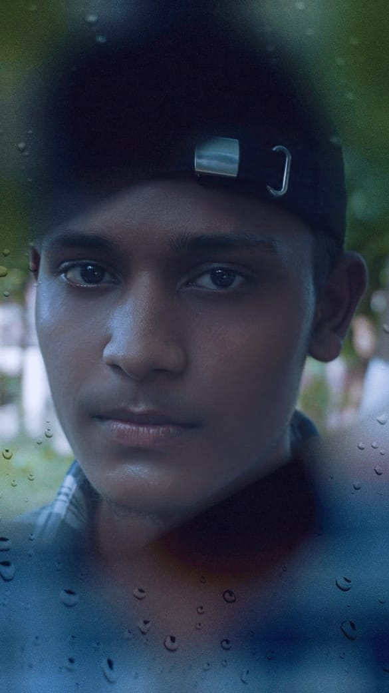

01 // MEMBER
[P.K JENA]
[HEAD OF NIGGAS]
[UNDISPUTED LEADER AND FOUNDER OF THE NIGGAS]
02 // MEMBER
[BOBA]
[HEAD OF MANAGEMENT]
[HEAD OF PHOTOFACTORY]
03 // MEMBER
[PREM]
[RADIATOR]
[SOCIAL ADMIN]
04 // MEMBER
[PRITAM]
[COORDINATOR]
[❤️]

05 // MEMBER
[PRANAB]
[MEDIATOR]
[💥]